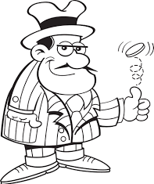

Lanzar la moneda con Servlets
Creado por Dídac Fibla Escoto
Lanzar la moneda

Pulsa este botón jugar:
¿Qué es "Cara o Cruz"?
El cara o cruz es un juego de azar en el que se emplea una moneda. Los participantes tienen que elegir un lado de la moneda y lanzarla.
Gana quién acierte qué lado de la moneda caerá cara arriba.
Este juego recibe diferentes nombres en otros países, como cara o escudo, cara o ceca, cara o sello, volado o águila o sol.